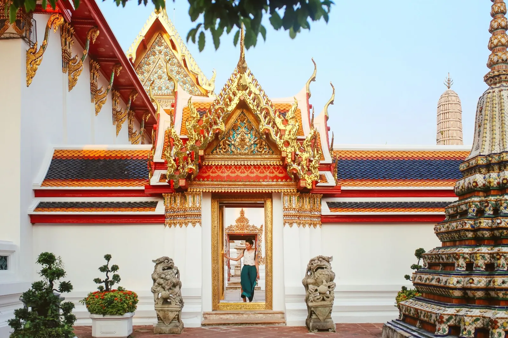
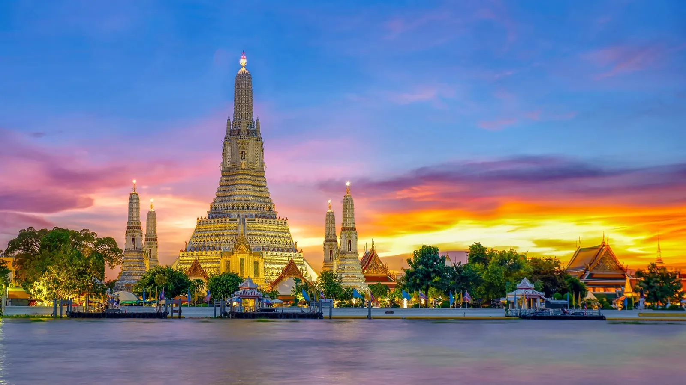
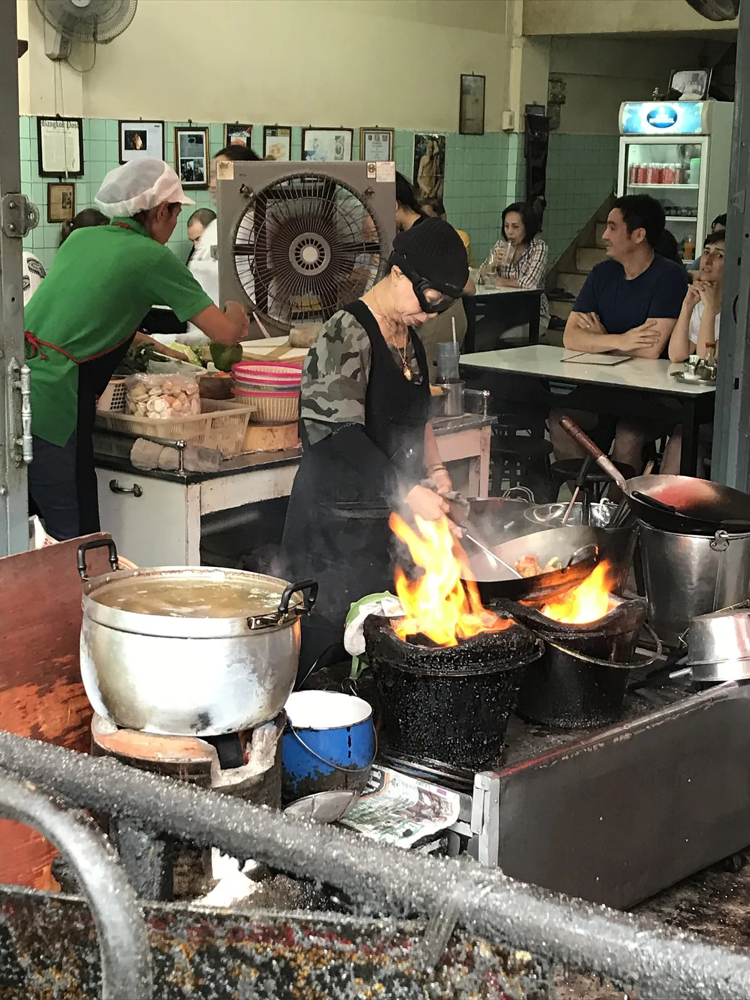
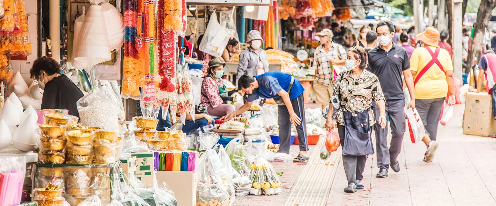

⛩ Temples & Landmarks

Wat Pho — ✓ best pick

Wat Arun — ✓ worth it
💡 Sunset hack
East bank near Wat Pho pier, ~1 h before sunset — Wat Arun silhouette shot. Mid-Feb–mid-Mar the sun sets directly behind the prang at 18:10–18:30.
🍜 Street Food — named stalls only

Raan Jay Fai ⭐ — 2–4 h wait, crab omelette 1,500 THB
[23]
🍼 Markets & Shopping

Chatuchak — 15,000+ stalls · Sat–Sun only
[37]
🚰 Floating markets
Skip Damnoen Saduak — tourist busloads. Amphawa (Fri–Sun) still draws Thai locals and does firefly boat rides after dark.
🌶 Rooftops & Bars
🎈 Districts
Khaosan (~5 AM, 100 THB beer) · Soi 11 (mixed local/expat) · Thonglor (craft cocktail, hi-so)
💆 Thai Massage — tier by tier
⏰ Pre-dinner timing
Book Health Land 13:30–15:30 Sat. Walk out rested for the 3★ dinner.
🥊 Muay Thai
Rajadamnern Stadium (1945) — Wed/Thu/Fri/Sat/Sun cards. [62]
1,600 THB (2nd class) → 4,500 THB (VIP). Book online — popular cards sell out.
🏅 Day Trips
⚠ 2-day trip: skip these
Ayutthaya eats a full day. Add Bang Krachao half-day if you have a free morning.
-
Bang Krachao [68]
50 THB/h bike
half-day ✓
-
Ayutthaya
1,000–1,500 THB pp
9–9.5 h full day
-
Maeklong + Damnoen
7–8 h · combine them
Friday option
🚤 River
✂ Skip-list for a 2-day trip
✗ Ayutthaya — eats a full day
✗ Damnoen Saduak — tourist trap
✗ Lebua Sky Bar — $50+ photo stop
✗ Asiatique — only if shopping is the goal
✗ Grand Palace — 500 THB, strict dress, polarising